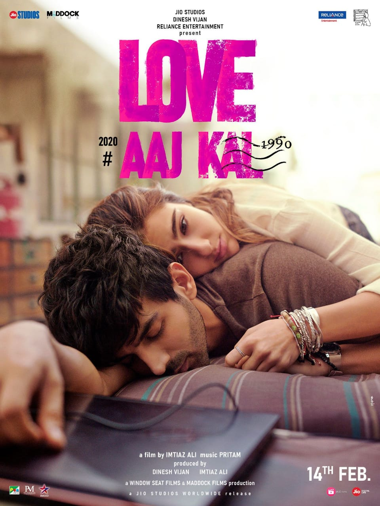

Love Aaj Kal(transl.'Love these days') is a 2020 Indian Hindi-Language romantic drama film directed by Imtiaz Ali and starring Kartik Aaryan and Sara Ali Khan. Principal photography began in the first half of March 2019 and ended in July 2019.It was released in India on Valentine's Day 2020.
| LOVE AAJ KAL | |
|---|---|
|  Theatrical release poster | |
| Directed by: | Imtiaz Ali |
| Produced by: | Dinesh Vijan Imtiaz Ali |
| Written by: | Imtiaz Ali Irshad Kamil(lyrics) |
| Starring: | Kartic Aaryan Sara Ali Khan Randeep Hooda Arushi Sharma |
| Music by: | Score:Ishaan Chhabra Songs: Pritam |
| Cinematography: | Amit Roy |
| Edited by: | Aarti Bajaj |
| Production Company: | Maddock Films Window Seat Films Reliance Entertainment |
| Distributed by: | Pen Marudhar Entertainment Jio Studios |
| Release Date: | 14 February 2020 |
| Running time: | 141 minutes |
| Country: | India |
| Language: | Hindi |
On 17 January 2019, it was reported that Ali was considering his next venture with Khan and Aaryan, a romantic film. On 1 March 2019, it was confirmed that the pair has been teamed up in directorial venture of Ali and the filming is starting in Delhi.
The principal photography of the film began in the second week of March 2019, with Aaryan shared a picture of Khan and him from sets. Khan also shared the picture on her social media account. The first schedule of the film was wrapped on 25 March 2019. To inform about the conclusion of the schedule, Khan posted a video on her Instagram account to celebrate. The twenty-day second schedule of the film began on 10 April in Udaipur. Filming was completed on 1 July 2019, after the final sixty-six days of shooting in Himachal Pradesh.